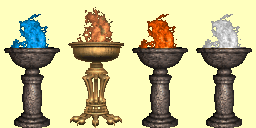

Hry o vlastnosti
V rùzných oblastech pevniny mù¾ete nalézt mramorové podstavce s obìtní nádobou, ve které hoøí oheò urèité barvy. Obecnì se oznaèují jako hry, popø. hry o vlastnosti. Podle barvy ohnì se pak rozdìlují do ètyø skupin podle úrovnì - modrá se oznaèuje jako Hra, oran¾ová jako Soutì¾, èervená jako Test a bílá jako Výzva. Ka¾dé oznaèení pak nese je¹tì pøívlastek podle jedné ze základních vlastností, napø. Hra síly, Test odolnosti apod. Výbìr vlastnosti je náhodný a mìní se s ka¾dou rozehranou hrou, shodná je v¾dy jen úroveò hry v oblasti. Význam her je následující. Pokud se postava pokusí ve høe soutì¾it, bere se nejprve v úvahu velikost pøíslu¹né vlastnosti, které hra odpovídá (napø. pro hru Síly je to síla apod.). Je-li hodnota vlastnosti ni¾¹í ne¾ úroveò hry, pak postava prohraje. Je-li v¹ak rovna anebo vy¹¹í ne¾ úroveò hry, pak postava k dané vlastnosti získá dal¹í body. Za výhru ve Høe jsou to 3 body, za výhru v Soutì¾i je to 5 bodù, za výhru v Testu je to 7 bodù a za výhru ve Výzvì je to 10 bodù.
|  |
| Oblast | Název hry | Po¾adovaná úroveò vlastnosti | Bonus k vlastnosti po výhøe |
| Smaragdový ostrov | Hra | 25 | +3 |
| Harmondale | Soutì¾ | 50 | +5 |
| Erathie | Soutì¾ | 50 | +5 |
| Tulareanský les | Soutì¾ | 50 | +5 |
| Avlee | Test | 100 | +7 |
| Deyja | Soutì¾ | 50 | +5 |
| Mohylové údolí | Soutì¾ | 50 | +5 |
| Brakadská pou¹» | Soutì¾ | 50 | +5 |
| Tatalie | Soutì¾ | 50 | +5 |
| Evenmorské ostrovy | Test | 100 | +7 |
| Nighon | Výzva | 200 | +10 |
| Eofol | Výzva | 200 | +10 |
Pokud postava v urèité høe vyhraje, pak nebude moci vyhrát v dal¹í høe o stejnou vlastnost v jiné oblasti. Hry v¹ak podléhají stejnì jako sudy s magickými tekutinami respawnu, tak¾e po jeho ubìhnutí je mo¾no opìt soutì¾it.
V souvislosti s existencí tìchto her jsem pøi¹el na jeden zajímavý tip. Proto¾e se pøi høe bere v úvahu celková velikost vlastnosti a to i vèetnì bonusù z pøedmìtù a doèasných bonusù (fontány, studny, kouzla, bílé lektvary apod.), tak toho lze patøiènì vyu¾ít. Jednotlivé bonusy (i ty doèasné) se toti¾ vzájemnì sèítají, tak¾e kdy¾ se napø. napijete z fontány pøidávající bonus +50 k pøíslu¹né vlastnosti a poté je¹tì zakouzlíte Den Bohù (nebo najdete pøíslu¹ný piedestal), bude výsledná velikost vlastnosti souètem obou bonusù. Díky tomu pak mù¾ete hrát i vy¹¹í úrovnì her. Jsou to v podstatì snadno získané dovednostní body.